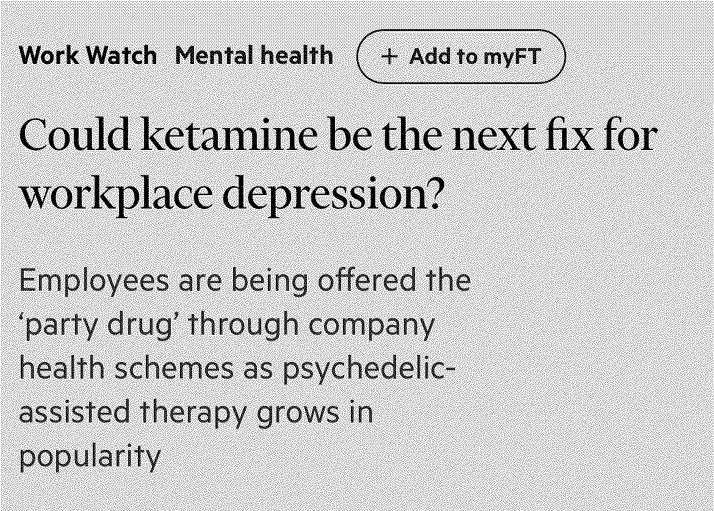

Anthropologist David Graeber contends that over half of societal work is pointless and becomes psychologically destructive when paired with work ethic that associates work with self-worth. These meaningless and pointless jobs are what he call bullshit jobs. Graeber categorises these bullshit jobs into five categories; flunkies, who serve to make their superiors feel important; goons, who act to deceive others on behalf of their employer; duct tapers, who temporarily fix problems that could be permanently fixed; box tickers, who create the appearance that something useful is being done when it is not; and taskmasters, who create extra work for those who do not need it. Thinking about most modern knowledge work and it isn't difficult to make the case that they're mostly pointless. Now, not all work has to be useful, rather, this becomes a problem when the bullshit jobs stop us from doing the actual work that needs doing. If you're stoked about the financial incentive for a new mother to prioritise her work as an agile scrum master for an IT-consultancy over her child, seeing it as a sign of our time's superior gender equality, I'm unsure of what to say.
Some criticism of Graeber's work writes that "bullshit 'taskmasters' and 'goons' such as hedge-fund managers or lobbyists reported that they were vastly satisfied with their work, while essential workers like refuse collectors and cleaners often felt their jobs were useless". It is hilarious to me that this isn't written with irony. I'm happy to hear that lobbyists and hedge-fund managers find meaning in their work, it shows me that the plasticity of the human mind is so enormous there might be hope for change. Jesus Christ. Fuck off.
There exist many types of jobs where, if they all stopped, society would become chaos. There are also many jobs where, if they all stopped, not only would nothing happen, we might actually manage to avoid chaos. Although, rest assured that hedge-fund managers are still needed, what would we possibly do without them?
Outgoing connections: